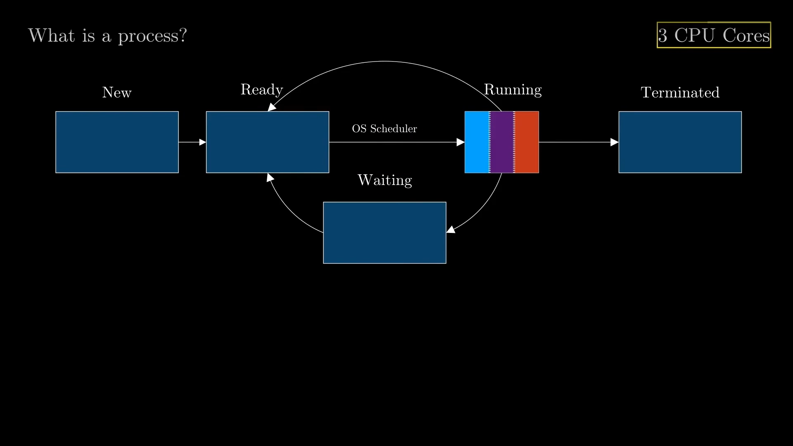
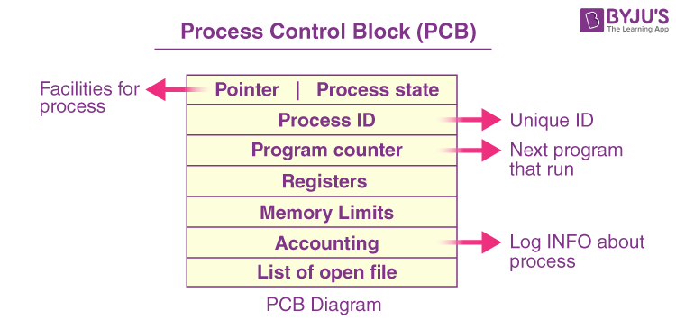

Процесс болон салбар процесс
Агуулга
- Процесс гэж юу вэ?
- Салбар процесс гэж юу вэ?
- Процесс ба салбар процессийн ялгаа
- Процессийн менежмент
- Процесс болон салбар процессийн хэрэглээ
- Дүгнэлт
- Ашигласан материалууд
What is a Process?
Процесс (process/task) гэдэг нь үйлдийн системийн удирдлаган доор компьютерийн нөөцөөр (санах ой, процессорын хугацаа г.м) тусгайлан хангагдсан, төв процессорт гүйцэтгэгдэх ажлыг хэлнэ. Процесс нь ямар нэгэн програм эсвэл програмын нэг хэсэг байж болно.
Процесс гэж юу вэ ?

Компьютерийн бүтцийг Hardware, Software гэж хуваан үзэж болно Application гэсэн давхрага нь Software - тайгаа шууд хамааралтай ба энэ нь хэрэглэгчийн удирдаж байгаа бүх л application, program - ийг агуулдаг гэдэгийг үзсэн.
Процесс гэж юу вэ ?
Үйлдийн систем буюу Software давхрага нь их зүйлд ашиглагддаг. Тэдний нэг нь Task Management юм. Энэ нь хэрэглэгчийн эсвэл үйлдийн систем өөрөө ч эхлүүлсэн CPU дээр ажиллаж байгаа програмыг хэлнэ.
Процессын төлөв
Процесс нь үргэлж ямар нэгэн төлөвт байдаг.
- New
- Ready
- Running
- Waiting
- Terminated
Процессын төлөв
Процесс нь үүсэх үедээ New төлөвт байна. CPU дээр ажиллах боломжтой болсон үедээ Ready төлөвт шилжинэ. Үйллийн системд нь OS Scheduler буюу төлөвлөгч байдаг. Энэ нь одоо Run хийж буй Процессыг хангалттай удаан үргэлжилсэн гэж үзвэл тэр процессыг Waiting эсвэл буцаан Ready төлөвт шилжүүлдэг.
Процессын төлөв

Процессын төлөв
Жишээ нь: 3 core-той CPU тэй бол 3 процессыг зэрэг ажиллуулах боломжтой.
Context Switch
Компьютер дээр ажиллаж байгаа бүх програм хангамжууд нь хэд хэдэн дарааллсан процесс хэлбэрээр зохион байгууллагддаг. Процесс нь CPU дээр ажиллах тодорхой хугацаатай байдаг ба үүнийг context switch гэдэг. Энэ нь процесс хоорондын шилжилтыг хэлнэ.
Процессын удирдлагын блок

Үйллийн системд процесс бүрийг процессын удирдлагын блокоор (PCB) дүрсэлдэг. Энэ нь тодорхой үйл явцтай холбоотой олон мэдээллийг агуулдаг.
Процессын удирдлагын блок
Үүнд:
- Процессын төлөв
- Програмын тоолуур
- Төв процессорын регистрүүд
- Төв процессорын төлөвлөлтийн мэдээлэл
- Хэрэглэгчийн мэдээлэл
- О/Г төлөвийн мэдээлэл
Салбар процесс гэж юу вэ? (Threads)
Салбар процесс нь тодорхой зорилгод нийцсэн логик дараалал бүхий үйл ажиллагааны багц юм. Салбар процесс нь үйл ажиллагаа нь том процессийн нэг хэсэг юм.Томоохон процессыг эцэг процесс гэж нэрлэдэг бөгөөд салбар процессийг хүүхэд процесс гэж ч нэрлэдэг.
- Хэрэглэгчийн түвшний Threads
- Цөмийн түвшний Threads
- Холимог түвшний Threads
Хэрэглэгчийн түвшний Threads (ULTs)
Эдгээр салбар процессийг хэрэглэгчийн түвшний library удирддаг. Тэдгээрийг цөмийн гаднах хэрэглэгчийн орон зайд бүтээж, төлөвлөж, удирддаг.
Хэрэглэгчийн түвшний салбар процессийн давуу тал
- Хурдан бөгөөд хялбар үүсгэх: Хэрэглэгчийн түвшний салбар процессийг илүү хурдан үүсгэж, удирдах боломжтой.
- Олон талт: Тэдгээрийг янз бүрийн үйлдлийн системүүдэд хэрэгжүүлэх боломжтой.
- Цөмийн горимын эрх шаардлагагүй: Цөмийн горимд шилжихгүйгээр контекст солих боломжтой.
Хэрэглэгчийн түвшний салбар процессийн сул талууд
- Олон процессорын хязгаарлагдмал хэрэглээ: Олон урсгалтай програмууд олон процессорыг бүрэн ашиглахгүй байх.
- Блоклох асуудал: Нэг салбар процессод блоклох үйлдэл нь бүх процессыг зогсоож болно.
Цөмийн түвшний Threads (KLTs)
Эдгээр салбар процессийг үйлдлийн системийн цөм шууд удирддаг. Үйлдлийн систем нь цөмийн түвшинд хуваарь гаргаж, удирддаг. Жишээ – Цөмийн түвшний салбар процессний жишээ нь Java урсгалууд, Линукс дээрх POSIX урсгал гэх мэт.
Цөмийн түвшний салбар процессийн давуу тал
- Жинхэнэ параллелизм: Цөмийн урсгалууд нь олон урсгалтай үед бодит зэрэгцээ гүйцэтгэлийг зөвшөөрдөг.
- Гүйцэтгэлийн тасралтгүй байдал: Бусад урсгалууд блоклогдсон байсан ч үргэлжлүүлэн ажиллах боломжтой.
- Системийн нөөцөд хандах хандалт: Цөмийн урсгалууд нь системийн түвшний функцууд, түүний дотор I/O үйлдлүүд рүү шууд хандах боломжтой.
Цөмийн түвшний салбар процессийн сул тал
- Удирдлагын нэмэлт зардал: Цөмийн салбар процесс үүсгэх, удирдахад илүү их цаг зарцуулдаг.
- Цөмийн горимд шилжих: Цөм рүү горим шилжихийг шаарддаг бөгөөд нэмэлт зардал нэмнэ.
Процесс ба салбар процессийн ялгаа
Тодорхойлолт, Хэмжээ ,Хурд ,Нөөц хуваалцах ,Нөлөөлөл ,Санах ой гэх мэт параметрүүдээр ялгаатай байдаг байна.
Процесс ба салбар процессийн ялгаа
| Параметр | Процесс | Салбар процесс |
|---|---|---|
| Тодорхойлолт | Процесс нь өөрийн санах ойн орон зайтай бие даасан гүйцэтгэх нэгж юм. | Салбар процесс нь процессын жижиг хэсэг бөгөөд санах ойн зайг ижил процессын бусад салбар процессуудтай хуваалцдаг. |
| Хэмжээ | Процессууд нь өөрийн гэсэн хаягийн орон зай, нөөцтэй тул илүү их зай эзлэн хүнд болдог. | Салбар процессууд нь ижил хаягийн зайг хуваалцдаг тул тэдгээрийг хөнгөн болгодог. |
| Хурд | Процессуудын хооронд шилжих нь санах ой болон нөөцийн менежментээс шалтгаалан илүү их хугацаа шаарддаг. | Салбар процессууд нь нэг санах ой болон нөөцийг хуваалцдаг тул тэдгээрийн хооронд шилжих нь илүү хурдан байдаг. |
| Нөөц хуваалцах | Процессууд нь анхдагч байдлаар нөөцөө хуваалцдаггүй бөгөөд харилцахын тулд процесс хоорондын харилцааны (IPC inter-process communication) механизм шаардлагатай. | Салбар процессууд нь процессын хүрээнд нөөцөө хуваалцдаг тул илүү хялбар харилцдаг. |
| Нөлөөлөл | Хэрэв нэг процесс гацвал бусад процесст нөлөөлөхгүй. | Хэрэв нэг салбар процесс гацвал энэ нь ижил процессын бусад салбар процесснд нөлөөлж болзошгүй. |
| Санах ой | Процесс ихэвчлэн салангид байдаг. | Санах ой хуваалцдаг. |
Процессийн менежмент
Энэ нь үйлдлийн системийн чухал хэсэг юм. Энэ нь одоо ажиллаж байгаа процессуудыг удирдах замаар таны компьютерийн ажиллагааг хянах боломжийг танд олгоно. Үүнд шаардлагагүй болсон процессуудыг дуусгах, үйл явцын тэргүүлэх чиглэлийг тогтоох гэх мэт зүйлс орно. Та үүнийг компьютер дээрээ ч хийж болно.
Thank You!
Энэ Smile -г бас кодоор хийсэн шүү.